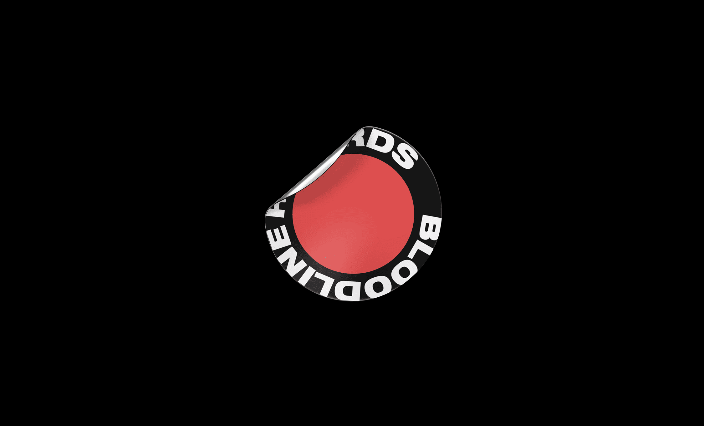
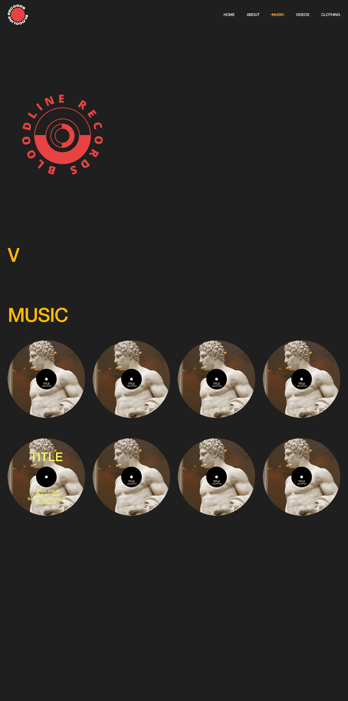
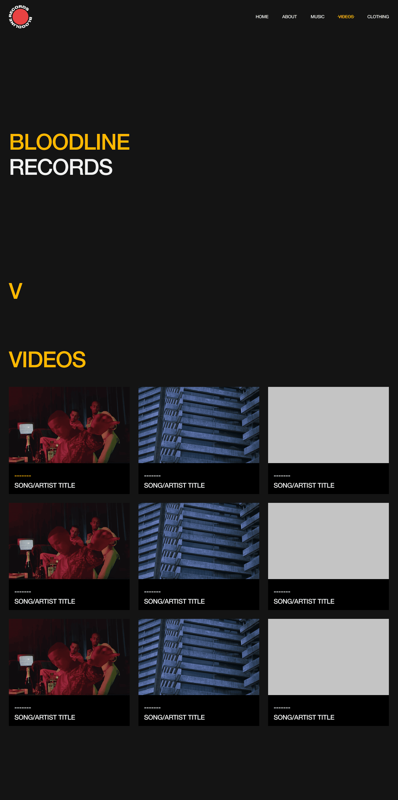
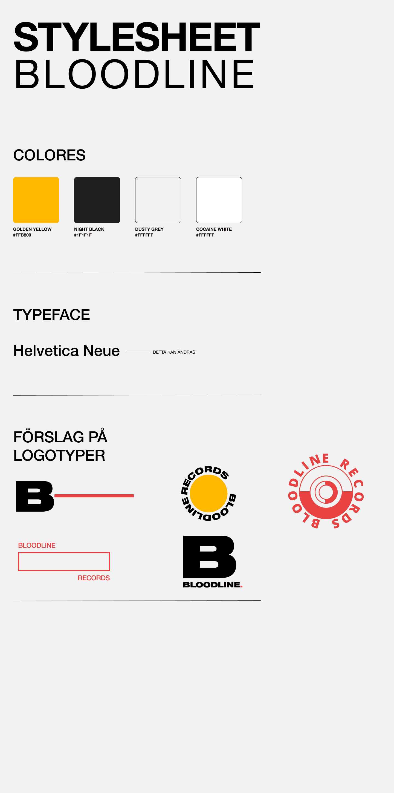
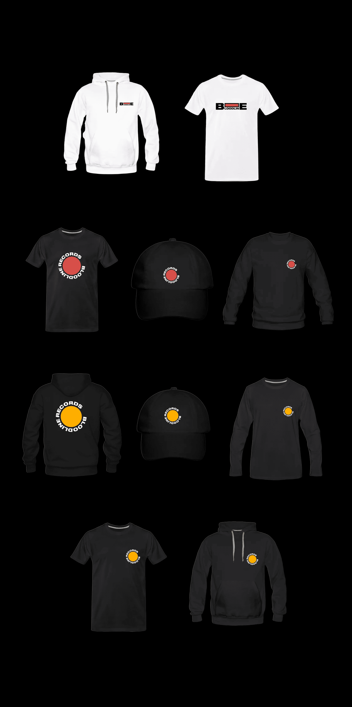
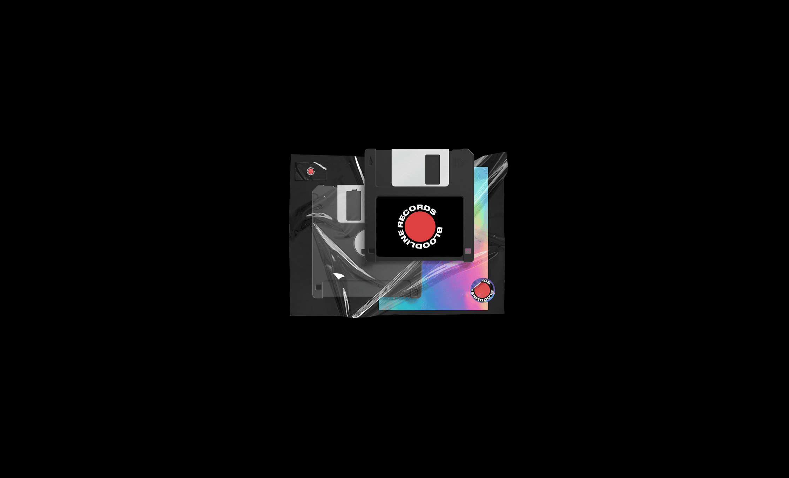

Bloodline
Ett koncept för en ny hemsida till skivbolaget och klädmärket Bloodline, med fokus på att samla musik, mode och film i en tydlig digital helhet.






Uppdraget var att ta fram ett nytt webbkoncept för Bloodline, ett skivbolag och klädmärke med koppling till artister som Aden x Asme, Asme, Aden och Awave. Projektet handlade om att samla musik, mode och visuellt innehåll i en tydlig digital helhet.
Målet var att skapa en hemsida som kändes mörk, självsäker och kulturellt förankrad. Designen togs fram för att ge utrymme åt både artistinnehåll, visuella projekt och kläder, samtidigt som strukturen hölls enkel och tydlig.
Projektet utvecklades som ett koncept och lanserades aldrig, vilket gav utrymme att arbeta mer fritt med varumärkets visuella riktning och digitala uttryck.